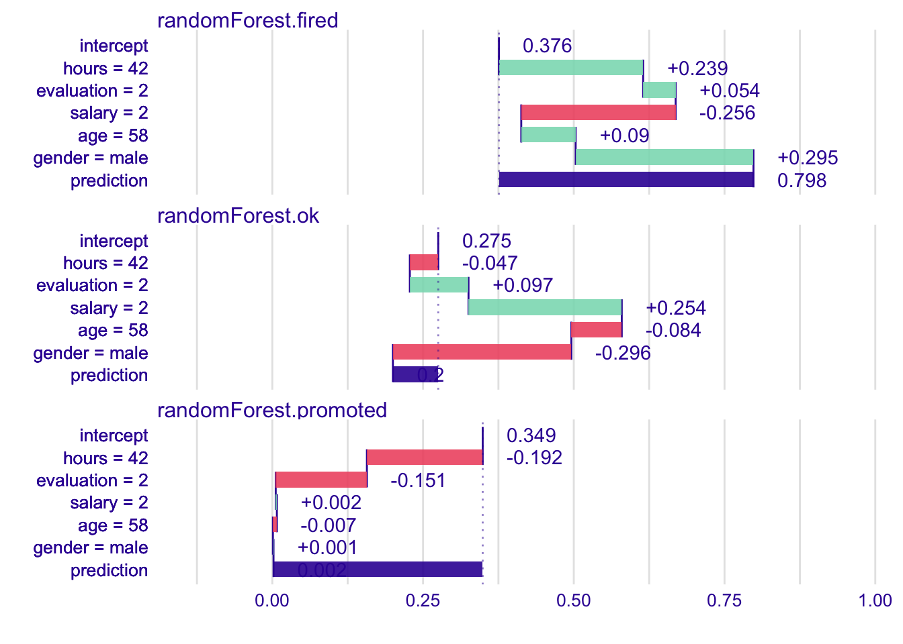
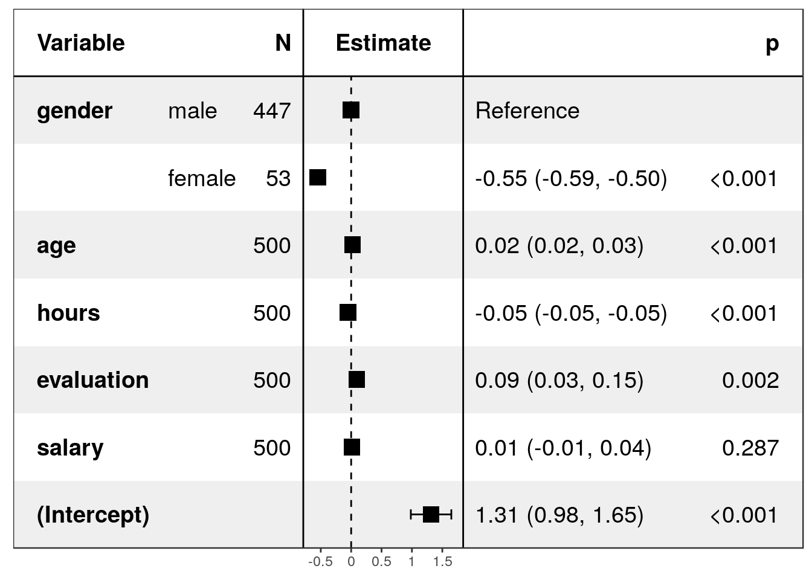

Chapter 9 Local approximations with white-box model
A different approach to explanations of a single observations is through surrogate models. Models that easy to understand and are similar to black box model around the point of interest.
Variable attribution methods, that were presented in the Section 6 are not interested in the local curvature of the model. They rather compare model prediction against average model prediction and they use probability structure of the dataset.
The complementary approach would be to directly explore information about model curvature around point of interest. In the section 4 we introduced Ceteris Paribus tool for such what-if analysis. But the limitation of ceteris Paribus pltos is that they explore changes along single dimension or pairs of dimensions.
In this section we describe an another approach based on local approximations with white-box models. This approach will also investigate local curvature of the model but indirectly, through surrogate white-box models.
The most known method from this class if LIME (Local Interpretable Model-Agnostic Explanations), introduced in the paper Why Should I Trust You?: Explaining the Predictions of Any Classifier (Ribeiro, Singh, and Guestrin 2016). This methods and it’s clones are now implemented in various R and python packages, see for example (Pedersen and Benesty 2018), (Staniak and Biecek 2018) or (Molnar 2018a).
9.1 Intuition
9.2 Method
The LIME method, and its clones, has following properties:
- model-agnostic, they do not imply any assumptions on model structure,
- interpretable representation, model input is transformed into a feature space that is easier to understand. One of applications comes from image data, single pixels are not easy to interpret, thus the LIME method decompose image into a series of super pixels, that are easier to interpret to humans,
- local fidelity means that the explanations shall be locally well fitted to the black-box model.
Therefore the objective is to find a local model \(M^L\) that approximates the black box model \(f\) in the point \(x^*\). As a solution the penalized loss function is used. The white-box model that is used for explanations satisfies following condition.
\[ M^*(x^*) = \arg \min_{g \in G} L(f, g, \Pi_{x^*}) + \Omega (g) \] where \(G\) is a family of white box models (e.g. linear models), \(\Pi_{x^*}\) is neighbourhood of \(x^*\) and \(\Omega\) stands for model complexity.

Figure 9.1: (fig:LIME1) A schematic idea behind local model approximations. Panel A shows training data, colors correspond to classess. Panel B showhs results fom the Random Forest model, whis is where the algorithm starts. Panel C shows new data sampled around the point of interest. Their color correspond to model response. Panel D shows fitted linear model that approximated the random forest model around point of interest
The algorithm is composed from three steps:
- Identification of interpretable data representations,
- Local sampling around the point of interest,
- Fitting a white box model in this neighbouhood
Identification of interpretable data representations
For image data, single pixel is not an interpretable feature. In this step the input space of the model is transformed to input space that is easier to understand for human. The image may be decomposed into parts and represented as presence/absence of some part of an image.
Local sampling around the point of interest
Once the interpretable data representation is identified, then the neighbourhood around point of interest needs to be explored.
Fitting a white box model in this neighbouhood
Any model that is easy to interpret may be fitted to this data, like decision tree or rule based system. However in practice the most common family of models are linear models.
9.3 Example: Hire or Fire?
9.4 Pros and cons
Local approximations are model agnostic, can be applied to any predictive model. Below we summarize key strengths and weaknesses of this approach.
Pros
- This method is highly adopted in text analysis and image analysis, in part thanks to the interpretable data representations.
- The intuition behind the model is straightforward
- Model explanations are sparse, thus only small number of features is used
Cons
- For continuous variables and tabular data it is not that easy to find interpretable representations
- The black-box model approximated the data and the white box model approximates the black box model. We do not have control over the quality of local fit of the white box model, thus the surrogate model may be misleading.
- Due to the curse of dimensionality, for high dimensional space points are sparse.
9.5 Code snippets for R
In this section we present example application of lime (Pedersen and Benesty 2018) and live (Staniak and Biecek 2018) packages. Note that this method is also implemented in iml (Molnar 2018a) and other packages. These pacakages differ in some details and also results in different explanations.
Model preparation
In this section we will present examples based on the HR dataset. See the Section 18.1 for more details.
## gender age hours evaluation salary status
## 1 male 32.58267 41.88626 3 1 fired
## 2 female 41.21104 36.34339 2 5 fired
## 3 male 37.70516 36.81718 3 0 fired
## 4 female 30.06051 38.96032 3 2 fired
## 5 male 21.10283 62.15464 5 3 promoted
## 6 male 40.11812 69.53973 2 0 firedThe problem here is to predict average price for square meter for an apartment. Let’s build a random forest model with randomForest package (Breiman et al. 2018).
library("randomForest")
rf_model <- randomForest(status ~ gender + age + hours + evaluation + salary, data = HR)
rf_model##
## Call:
## randomForest(formula = status ~ gender + age + hours + evaluation + salary, data = HR)
## Type of random forest: classification
## Number of trees: 500
## No. of variables tried at each split: 2
##
## OOB estimate of error rate: 27.4%
## Confusion matrix:
## fired ok promoted class.error
## fired 2274 380 201 0.2035026
## ok 539 1235 447 0.4439442
## promoted 199 384 2188 0.2103934new_observation <- data.frame(gender = factor("male", levels = c("male", "female")),
age = 57.7,
hours = 42.3,
evaluation = 2,
salary = 2)
predict(rf_model, new_observation, type = "prob")## fired ok promoted
## 1 0.806 0.192 0.002
## attr(,"class")
## [1] "matrix" "votes"9.5.1 The lime pacakge
library("lime")
model_type.randomForest <- function(x, ...) "classification"
lime_rf <- lime(HR[,1:5], rf_model)
explanations <- lime::explain(new_observation[,1:5], lime_rf, n_labels = 3, n_features = 3)
explanations## model_type case label label_prob model_r2 model_intercept
## 1 classification 1 fired 0.806 0.1300379 0.2535829
## 2 classification 1 fired 0.806 0.1300379 0.2535829
## 3 classification 1 fired 0.806 0.1300379 0.2535829
## 4 classification 1 ok 0.192 0.1251273 0.1892168
## 5 classification 1 ok 0.192 0.1251273 0.1892168
## 6 classification 1 ok 0.192 0.1251273 0.1892168
## 7 classification 1 promoted 0.002 0.2917896 0.5234322
## 8 classification 1 promoted 0.002 0.2917896 0.5234322
## 9 classification 1 promoted 0.002 0.2917896 0.5234322
## model_prediction feature feature_value feature_weight
## 1 0.63245342 gender 2.0 0.005909490
## 2 0.63245342 hours 42.3 0.255709364
## 3 0.63245342 evaluation 2.0 0.117251637
## 4 0.45914034 age 57.7 -0.001159746
## 5 0.45914034 evaluation 2.0 0.199215613
## 6 0.45914034 salary 2.0 0.071867712
## 7 0.01471303 age 57.7 0.011368221
## 8 0.01471303 evaluation 2.0 -0.317045218
## 9 0.01471303 hours 42.3 -0.203042163
## feature_desc data prediction
## 1 gender = male 2.0, 57.7, 42.3, 2.0, 2.0 0.806, 0.192, 0.002
## 2 37.6 < hours <= 46.3 2.0, 57.7, 42.3, 2.0, 2.0 0.806, 0.192, 0.002
## 3 evaluation <= 3 2.0, 57.7, 42.3, 2.0, 2.0 0.806, 0.192, 0.002
## 4 50.0 < age 2.0, 57.7, 42.3, 2.0, 2.0 0.806, 0.192, 0.002
## 5 evaluation <= 3 2.0, 57.7, 42.3, 2.0, 2.0 0.806, 0.192, 0.002
## 6 1 < salary <= 2 2.0, 57.7, 42.3, 2.0, 2.0 0.806, 0.192, 0.002
## 7 50.0 < age 2.0, 57.7, 42.3, 2.0, 2.0 0.806, 0.192, 0.002
## 8 evaluation <= 3 2.0, 57.7, 42.3, 2.0, 2.0 0.806, 0.192, 0.002
## 9 37.6 < hours <= 46.3 2.0, 57.7, 42.3, 2.0, 2.0 0.806, 0.192, 0.002
9.5.2 The live package
library("live")
new_observation$status <- "fired"
explainer_rf_fired <- explain(rf_model,
data = HR,
y = HR$status == "fired",
predict_function = function(m,x) predict(m,x, type = "prob")[,1],
label = "fired")
local_model <- local_approximation(explainer_rf_fired, new_observation,
target_variable_name = "status", n_new_obs = 500)
local_model## Dataset:
## Observations: 500
## Variables: 6
## Response variable: status
## Explanation model:
## Name: regr.lm
## Variable selection wasn't performed
## Weights present in the explanation model
## R-squared: 0.7339

9.5.3 The iml package
library("iml")
explainer_rf = Predictor$new(rf_model, data = HR[,1:5])
white_box = LocalModel$new(explainer_rf, x.interest = new_observation[,1:5], k = 5)
white_box## Interpretation method: LocalModel
##
##
## Analysed predictor:
## Prediction task: unknown
##
##
## Analysed data:
## Sampling from data.frame with 7847 rows and 5 columns.
##
## Head of results:
## beta x.recoded effect x.original feature feature.value
## 1 0.070451023 1.0 0.07045102 male gender=male gender=male
## 2 0.005839379 57.7 0.33693215 57.7 age age=57.7
## 3 -0.090103309 42.3 -3.81136995 42.3 hours hours=42.3
## 4 -0.508252954 2.0 -1.01650591 2 evaluation evaluation=2
## 5 -0.032191570 2.0 -0.06438314 2 salary salary=2
## 6 -0.018323731 1.0 -0.01832373 male gender=male gender=male
## .class
## 1 fired
## 2 fired
## 3 fired
## 4 fired
## 5 fired
## 6 ok
References
Ribeiro, Marco Tulio, Sameer Singh, and Carlos Guestrin. 2016. “Why Should I Trust You?: Explaining the Predictions of Any Classifier.” In, 1135–44. ACM Press. https://doi.org/10.1145/2939672.2939778.
Pedersen, Thomas Lin, and Michaël Benesty. 2018. Lime: Local Interpretable Model-Agnostic Explanations. https://CRAN.R-project.org/package=lime.
Staniak, Mateusz, and Przemysław Biecek. 2018. Live: Local Interpretable (Model-Agnostic) Visual Explanations. https://CRAN.R-project.org/package=live.
Molnar, Christoph. 2018a. Iml: Interpretable Machine Learning. https://CRAN.R-project.org/package=iml.
Breiman, Leo, Adele Cutler, Andy Liaw, and Matthew Wiener. 2018. RandomForest: Breiman and Cutler’s Random Forests for Classification and Regression. https://CRAN.R-project.org/package=randomForest.